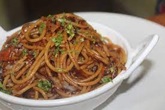

Chicken Biryani

Ingredients:
- 1 cup boiled basmati rice
- 1/2 teaspoon mint leaves
- salt as required
- 2 teaspoon virgin olive oil
- 3 green cardamom
- 2 clove
- 2 onion
- 1 teaspoon turmeric
- 1 tablespoon garlic paste
- 1 cup hung curd
- 2 tablespoon coriander leaves
- water as required
- 600 gm chicken
- 1 tablespoon garam masala powder
- 1 teaspoon saffron
- 1 tablespoon bay leaf
- 1 black cardamom
- 1 teaspoon cumin seeds
- 4 green chillies
- 1 tablespoon ginger paste
- 1 teaspoon red chilli powder
- 1/2 tablespoon ginger
- 2 drops kewra
- 1 tablespoon rose water
Instructions:
- Prepare saffron-kewra water and chop veggies
To make a delightful chicken biryani dish, firstly soak saffron in water to prepare saffron water (one tsp saffron can be soaked in 1/4 cup water). Next, mix kewra drops in water and mix well to make kewra water. Set them aside for later usage. Now, chop the onion and coriander leaves and keep them aside. - Saute the onions
Meanwhile, heat olive oil in a deep bottomed pan. Once the oil is hot enough, add cumin seeds, bay leaf, green cardamom, black cardamom, cloves in it, and saute for about a minute. Then, add chopped onion to it and saute until pink. Now, add chicken into it with slit green chillies, turmeric, salt to taste, ginger-garlic paste, red chilli powder and green chilli paste. Mix well all the spices and cook for 2-3 minutes. Then, add hung curd into it and give a mix. (Make sure the chicken is washed properly and patted dry before adding it to the dish) - Cook biryani on low heat for 5-6 minutes
Turn the flame to medium again and add garam masala in it along with ginger julienned, coriander and mint leaves. Add kewra water, rose water and 1 tsp saffron water in it. Cook till the chicken is tender. Then add 1 cup cooked rice and spread evenly. Then add the remaining saffron water and pour ghee over it. You can now cook the dish without the lid or cover it with a lid to give a dum-effect due to the steam formation. - Serve hot chicken biryani with your favourite chutney or raita
Cook for 15-20 minutes with a closed lid and garnish with 1 tbsp fried onions and coriander leaves. Serve hot chicken biryani with raita of your choice. Enjoy!
Chicken curry
Ingredients:
- 1KG Chicken
- 1/2 cup tomato puree
- 1 tablespoon garlic paste
- 1 cinnamon stick
- 1 bay leaf
- 1 tablespoon garam masala powder
- 1 tablespoon kasoori methi powder
- 2 1/2 cup water
- 2 onion
- 1 tablespoon ginger paste
- 1 cup cashews
- 1 teaspoon cumin seeds
- 3 red chilli
- 1 tablespoon coriander powder
- 2 tablespoon vegetable oil
Instructions:
- Wash the chicken & saute the whole spices
Firstly, wash the chicken under running water and keep it aside. Now, take a non-stick pan and pour little oil in it. Then add whole spices - cumin seeds, cinnamon seeds and bay leaf. Let them cook until the seeds start to crackle. - Marinate the chicken & prepare onion, cashews & red chillies paste
On the other hand, marinate the chicken with salt, turmeric powder and lemon juice and keep it aside for 20-30 minutes. Now, using a grinder, grind onion and 1 cup of water to make a puree of thick consistency. Put aside till required. Wash the grinder and put cashews in it and add 1 cup of water. Make a paste of cashews of smooth consistency. Again, wash the grinder and grind red chillies with 1/2 cup of water to form a paste of thick consistency. - Cook the onion & tomato puree with the lid on
Next, in the pan with the whole spices, add onion puree with ginger and garlic paste and cook it for 2 minutes. Add tomato puree to the pan and cook for another 2 minutes. Meanwhile, add salt to taste and red chilli paste. Cover the pan with a lid. - Add the marinated chicken & cashews & red chilli paste
Then add the marinated chicken pieces in the gravy and let it cook for more 15-20 minutes with the lid on the pan, after 15-20 minutes, check if the chicken pieces are cooked properly. Now, add cashews and red chilli paste into the mixture and cook for another 2 minutes. - Add the spices & cook the chicken
Now add garam masala, coriander powder, cashew nut paste and Kasuri methi and mix them all well. Let the chicken curry cook for another 5 minutes and then turn off the flame. Garnish the curry with fresh coriander leaves and serve hot with steamed rice or paratha.
Pasta
Ingredients:
- 200 gm pasta tagliatelle
- 1/4 cup tomato puree
- water as required
- 1/2 cup mascarpone cheese
- 100 ml vodka
- 3 tablespoon caviar
Instructions:
- To prepare this recipe, boil pasta in a pan over medium flame in required amount of water
- Now, melt the 1/2 cup mascarpone cheese and stir in a little tomato puree. Let it turn to salmon pink color.
- Add vodka to the mixture of melted cheese and tomato puree
- Now, add 1 tsp of caviar and toss the drained pasta with it well. Mix boiled pasta into sauce mixture over a low flame.
- Cut lemon into small wedges and use it to garnish with 2 tsp caviar. Your Pasta Romanov is ready to serve.
Chinese
Ingredients:
- 300 gm chinese noodles
- 4 sliced onion
- 200 gm shredded cabbage
- 150 gm chopped bean
- 4 teaspoon sunflower oil
- 2 tablespoon tomato chili sauce
- 2 pinch powdered salt
- 8 tablespoon water
- 4 teaspoon sunflower oil
- 4 sliced capsicum ( green pepper)
- 4 shredded carrotv
- 20 cloves chopped garlic
- 4 tablespoon light soya sauce
- 2 tablespoon vinegar
- 2 pinch powdered black pepper
- 2 teaspoon ajinomoto
Instructions:
- Boil the noodles
Chinese Noodle is a delectable amalgamation of noodles, veggies and spices. Undoubtedly, it is one of the easiest and simplest thing to prepare. Here a simple way of making this dish at home by using some easily available ingredients Take a big microwave-safe bowl and add water in it. Then add oil and salt. Boil for 10 minutes. Then add noodles and boil for 8-9 minutes. Keep stirring in between. Once done, strain and wash the boiled noodles under cold running water. Once done, keep aside. - Microwave the veggies & add seasoning, sauces
Then take another microwave-safe bowl and add oil in it. Microwave at 100% power for 30 secs. Once the oil is sufficiently hot, add all chopped vegetables and microwave for 4 to 5 minutes at 100% power. Stir in between. Add soya sauce, tomato chilli sauce, vinegar, salt, black pepper and Ajinomoto. Stir the ingredients well. - Add the noodles & microwave again
Now add the boiled noodles to vegetables and stir it. Microwave for 1 min. At 80% power. Chinese Noodles is ready to be served. Pair it with vegetable or chicken Manchurian and serve hot.
Egg curry
Ingredients:
Instructions:
- 4 Whole Eggs , hard boiled
- 6 Tomatoes , cooked and pureed
- 1 teaspoon Turmeric powder (Haldi)
- 1 teaspoon Garam masala powder
- 1 teaspoon Coriander Powder (Dhania)
- 1/2 teaspoon Red Chilli powder
- 1/2 teaspoon Sugar
- Salt , to taste
- Coriander (Dhania) Leaves , few leaves, finely chopped
- Oil , for cooking
- To begin making the Quick & Easy Egg Curry Recipe, Firstly we will boil the eggs. Add the eggs in a saucepan with some water. Add sufficient water that the eggs are covered with it. Let it come to boil for 15 minutes or untill you see a crack on the outer shell.
- Once done, let it cool down. Remove the outer shell of the egg and keep it aside.
- Once the onion is well roasted, add in the turmeric powder, sugar, garam masala powder, coriander power and red chilli powder. Stir those powders into the onion masala until well combined. This will take about 3 to 4 minutes.
- After 3 to 4 minutes, add in the tomato puree, salt and the eggs. Simmer the Egg Curry covered for 10 to 15 minutes until you see the eggs are coated well with the curry.
- Check the salt and spice levels and the consistency of the curry. Adjust them to taste and add water if you want the consistency of the curry to be thinner. Once done, stir in the chopped coriander leaves and serve.
- Quick And Simple Egg Curry Recipe makes a delicious dinner or a Sunday brunch when served along with Steamed Rice, Carrot Salad and a Boondi Raita.
Instructions:
Fish curry
Ingredients:
- For Fish Marinition
500gm Fish ½ Tsp Ginger Paste ½ Tsp Garlic paste ¼ Tsp turmeric powder ¼ to ½ red chilli powder salt As Require - 2 Medium-Size Onions Sliced
- 2 Medium-Size Tomatoes Diced
- 2 Tbsp coconut Grated
- 1 Tsp red chilli powder
- 1 sprig of curry leaves
- 1 Green Chilli Sliced Or Chopped
- 1 Tsp ginger garlic paste
- 1 to 1 ½ garam masala
- Walnut-Size Ball Of Kokum Or Tamarind
Instructions:
- In a bowl, add fresh fish pieces along with the marination ingredients. Coat the fish well and let it rest for about 30 minutes.
- Heat oil in a deep bottomed vessel like a wok and add half the onions and all the tomatoes. Cook until onions turn translucent and the tomatoes get mushy.
- Add grated coconut and red chilli powder. Once the ingredients are well-cooked, turn off the flame and let it cool.
- Blend the onion and tomato mixture into a coarse paste as per your liking. If the paste is too thick, then add 2 tbsp of water to make the paste smoother.
- Heat oil in the wok and add some cumin seeds. Add curry leaves, rest of the onions, ginger-garlic paste, and green chillies. Sauté until cooked.
- Add the grounded paste and the tamarind or kokum water. Let it simmer on low heat. Add garam masala and pour 1 ¼ cup of water. Add salt as required. Let the mixture boil until the oil begins to separate and the gravy starts thickening.
- Add the marinated fish and cover the wok with a lid. Let it cook on medium heat. Flip the pieces every 3 - 4 minutes based on their thickness.
- Garnish the fish curry with chopped coriander and serve it with plain steamed rice. Your scrumptious meal is ready. Time to gorge on it!
Momos
Ingredients:
- 450 gm all purpose flour
- 1 tablespoon refined oil
- 2 large onion
- 1 inch ginger
- water as required
- 1 tablespoon chilli garlic paste
- 300 gm boiled chicken
- 5 green chilli
- salt as required
- 2 teaspoon soy sauce
- black pepper as required
- 1/2 cup red bell pepper
Instructions:
- Chop the vegetables and wash chicken
Chicken Momos is a dish that needs no introduction. However, it is pretty easy to prepare it at home without putting in much effort. Here’s how you go about preparing it at home: To begin with, rinse the veggies and chicken with lukewarm water to thoroughly clean them. Then take a clean chopping board, chop the vegetables separately and keep them aside. - Boil the chicken and then shred well
Then take a pan or a pressure cooker and boil the chicken, with a pinch of salt and pepper. If you want to make it aromatic, you can add a small teaspoon of ginger and chilli garlic paste. If you like the flavour of garlic, you can add some more garlic paste. Once done, carefully mince the boiled chicken. Keep it aside. - Prepare the dough and filling for Chicken
Now, take a deep mixing bowl and add refined oil in it followed by all-purpose flour and salt. Mix well with enough water and knead the mixture into a smooth dough. Knead well and ensure that no lumps are formed. Take another mixing bowl and add chicken followed by chopped vegetables, mix well and combine everything together. Then, add soy sauce to the chicken mix and stir well. Now take the prepared dough and roll out small balls out of it. - Flatten the dough balls and fill it with chicken stuffing, and steam for 20 minutes
Using a rolling pin, flatten the balls in a square shape and add the chicken and veggies stuffing at the centre. Bring the edges close and secure them to make a momo. Repeat this step with the remaining balls. Transfer the prepared momos to a steamer and steam for 20 minutes or until they turn soft and tender. Serve fresh and hot with your choice of chutney or dip.
Sandwich
Ingredients:
- 1 small heirloom golden or red tomato, cut into horizontal slices
- 2 leaves of radicchio lettuce
- 2 thick slices of multigrain artisanal bread
- 1 tsp. olive oil mayo
- 1 tsp. dijon or whole grain mustard
- 1/2 tsp. wasabi dressing
- 2 thin slices of serrano ham
- 2 thin slices of mortadella
- 2 slices of smoked gouda
Instructions:
- Toast or grill bread to give it a unique look. Spread, mayo, mustard and wasabi on one side of each slice of bread.
- Place lettuce slice on one piece of bread, then add the meats by folding the slices over to give volume to the sandwich, as you place then onto the bread.
- Finish with cheese, and tomato
- Place final piece of bread onto sandwich and cut in half. Use toothpicks to hold sandwich in place if needed. Enjoy!